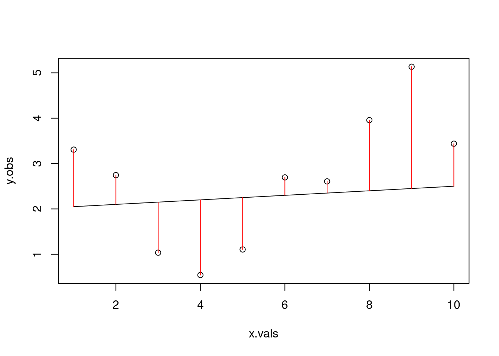
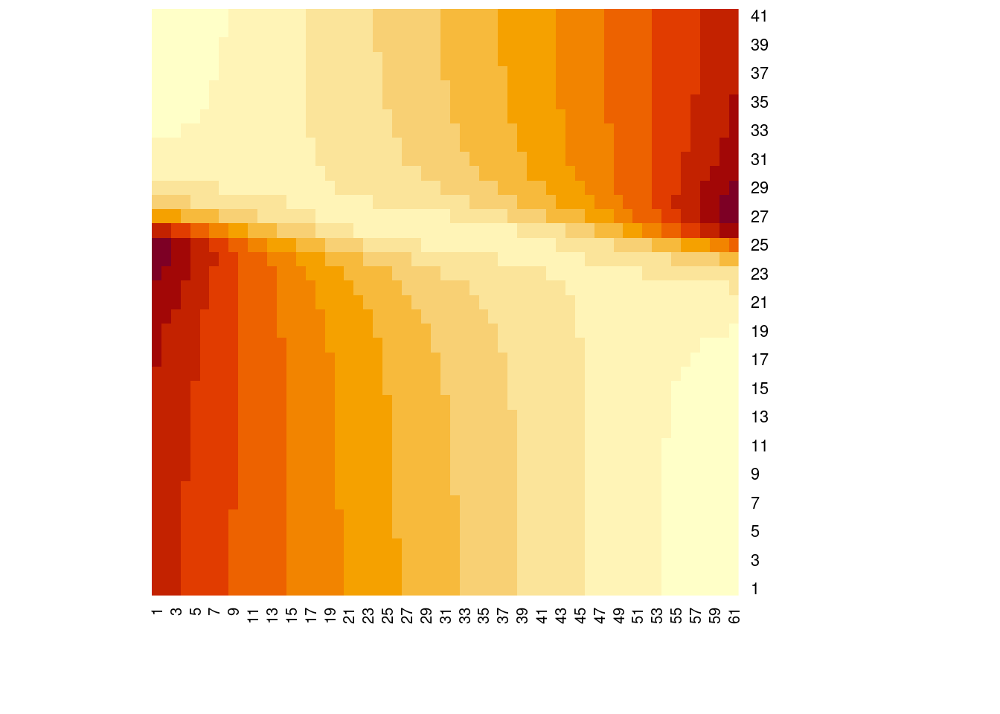

On Tuesday, we talked about the first three assumptions of linear models: that they make biological sense, that the effects are linear, and the effects are additive. Today, we are talking (at least indirectly) about the last three, which all have to do with errors.
6.1 Errors (or residuals)
Error is a terrible term for what it describes, which is the difference between the predicted values (i.e., the expected values based on our additive, linear effects) and the observed values. These differences are also called the residuals, meaning the residual variation left behind that is not explained by the linear effects. The term error implies that for some reason, we should expect all values to fit perfectly along the modeled line, and to be perfectly explained by our model. But, we know that models are simplifications of the real world, and the most parsimonious model is the best one. So we should always expect that we are going to be a bit wrong, which is why it then seems silly to say we’ve made an ‘error’ when really, there are just deviations from expected values. It would be absolutely bonkers to assume that because the average adult women in the United States is approximately 63.5 inches that it is an ‘error’ for someone to be taller or shorter than that. Variation just exists.
Sure, variation could stem from an actual error. For example, because we imperfectly observe the world, miscount individuals, our measurement tools are a bit faulty, etc. It could also represent true biological variability around a population mean (e.g. think about intraspecific trait variability). Or, it could represent unmeasured or unmodeled variables (i.e., the variable we are modeling is predicted by two covariates, but we only included one, so we are working with an incomplete picture). And, of course, it could be a combination of these different factors.
6.2 Ordinary Least Squares
In an algebraic linear function represented in slope-intercept form, all values of \(y\) lie on the line, with no deviation from it. In the real world, data are messy, so how do we find the line of best fit through that data? Typically, we use ordinary least squares (OLS) regression. You can think of it as if we are attempting to find the combination of the slope (\(m\)) and intercept (\(b\)) that leads to a line that is as close as possible to all data points. In other words, we want to have the smallest residuals (the difference between each point and the predicted value on the line) as possible. In reality, we base this fit on the sum of the squared residuals. Why squared? Let’s simulate some data.
# First, let's create a function that generates observations as a linear function # of x, i.e. in an algebraic senselinear_function <-function(m, x, b){ y <- m*x + breturn(y)}x.vals <-1:10slope <-0.2intercept <-1.2y.det <-linear_function(m = slope, x=x.vals, b=intercept)plot(y.det ~ x.vals)lines(y.det ~ x.vals)
# calculate the residualsres <- y.obs - y.detsum(res^2)
[1] 14.89237
# what if we tried a different line?alt.line <-linear_function(m=0.05, x=x.vals, b=2)plot(y.obs ~ x.vals)lines(alt.line ~ x.vals)arrows(x0 = x.vals, x1=x.vals,y0=alt.line, y1=y.obs, code=3, angle=90, length=0, col="red")

res2 <- y.obs - alt.linesum(res2^2)
[1] 18.02767
Because we simulated based on the deterministic relationship but added in error, neither of these attempts is actually the line of best fit for our ‘observed’ data. Let’s build a for-loop that will let us try a bunch of different potential slopes.
# so far, we fixed the intercept at 0 and tried slopes based on that# what if we want to estimate both the slope and intercept parameter?potential_b <-seq(-3, 3, by=0.1)ssr2 <-matrix(nrow=length(potential_m), ncol=length(potential_b))for(i in1:length(potential_m)){for(j in1:length(potential_b)){ line_i <-linear_function(m = potential_m[i], x = x.vals, b=potential_b[j]) res_i <- y.obs - line_i ssr2[i, j] <-sum(res_i^2) }}# visualize the likelihood surfaceheatmap(ssr2, Rowv =NA, Colv =NA)

min(ssr2)
[1] 13.63746
which.min(ssr2)
[1] 1909
which(ssr2==min(ssr2), arr.ind = T)
row col
[1,] 23 47
potential_m[23]
[1] 0.2
potential_b[47]
[1] 1.6
# Are these what we actually set earlier? No, because we included a bit of stochasticity in our data generating process
Realistically, we rarely (if ever?) actually brute force our way to a combination of parameters that minimizes the sum of the squared residuals. Instead, we use built-in functions to do that for us. We will use the function lm to fit a linear model to our simulated data which has a slope and intercept that minimize the sum of the squared residuals. The argument that the function needs is a formula, which we represent as our response variable over our predictor variable(s) using the tilde (i.e. y ~ x).
mod1 <-lm(y.obs ~ x.vals)summary(mod1)
Call:
lm(formula = y.obs ~ x.vals)
Residuals:
Min 1Q Median 3Q Max
-1.7480 -0.8622 -0.2009 0.8796 1.7493
Coefficients:
Estimate Std. Error t value Pr(>|t|)
(Intercept) 1.3137 0.8860 1.483 0.176
x.vals 0.2442 0.1428 1.710 0.126
Residual standard error: 1.297 on 8 degrees of freedom
Multiple R-squared: 0.2677, Adjusted R-squared: 0.1762
F-statistic: 2.925 on 1 and 8 DF, p-value: 0.1256
# From our "observed" data, the best line has slope=0.2442 and intercept=1.3137# Let's double check this with our function and residualsols.line <-linear_function(m=0.2442, x=x.vals, b=1.3137)plot(y.obs ~ x.vals)lines(ols.line ~ x.vals)arrows(x0 = x.vals, x1=x.vals,y0=ols.line, y1=y.obs, code=3, angle=90, length=0, col="red")
res.ols <- y.obs - ols.linesum(res.ols^2)
[1] 13.45756
sum(res.ols) # Not actually zero because of rounding, but, very very close
[1] 0.0006278831
# Why doesn't this match what we got in our brute force approach?# What would happen if we increased the number of parameters we checked with brute force?
This is a very simple way to fit a linear model to data. We did this a brute force approach by trying combinations of parameter values that resulted in a linear model that minimized the sum of the squared residuals for the parameter values that we tried. Note that this last point is very important: we did not try all possible combinations of parameters, so even though we may have found a locally optimal solution, we could have missed the actual optimal solution.
Local versus global minimum
For normally distributed errors, OLS is essentially a special case of maximum likelihood estimation (MLE). Maximum likelihood attempts to find the parameter combination that makes our observed data most probable. But, the likelihood function (not in the R function sense, but in the math function sense) can get stuck at local optima. Think of it sort of like a blindfolded person walking around a field trying to find the lowest point. If they keep walking downhill, eventually they will find themselves at the bottom. If any step they take in any direction is uphill, then they should stop where they are. This approach works fine if there is only one low point in the field, but not if there are multiple depressions. What if they’re just stuck in a bison wallow?